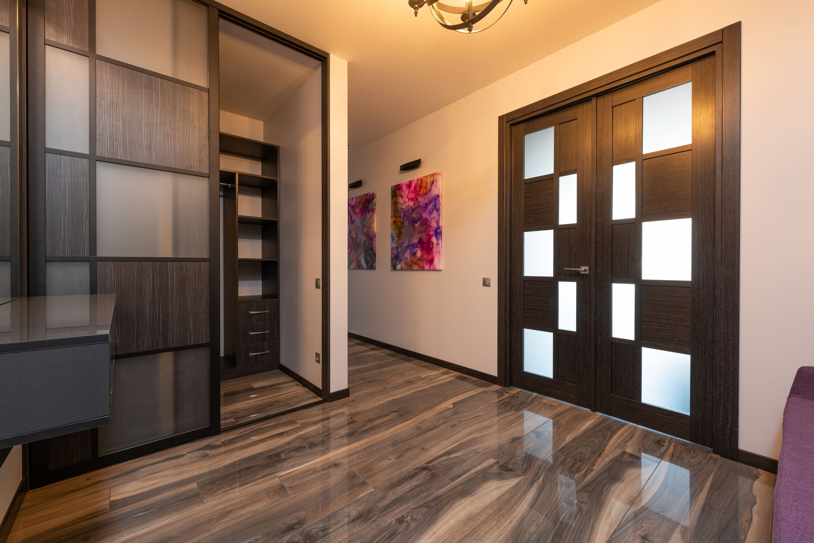
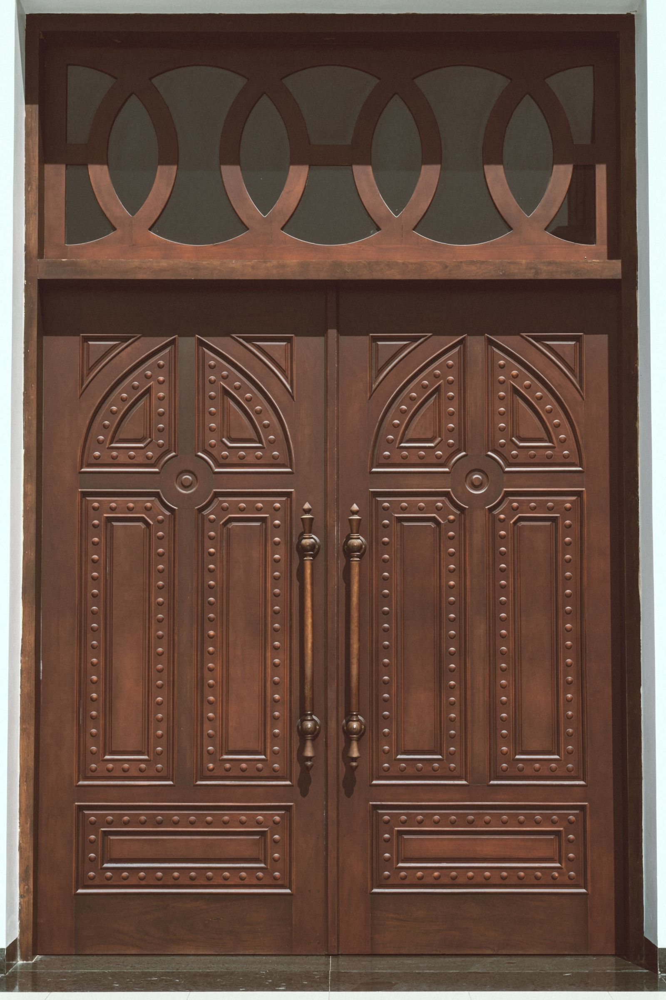
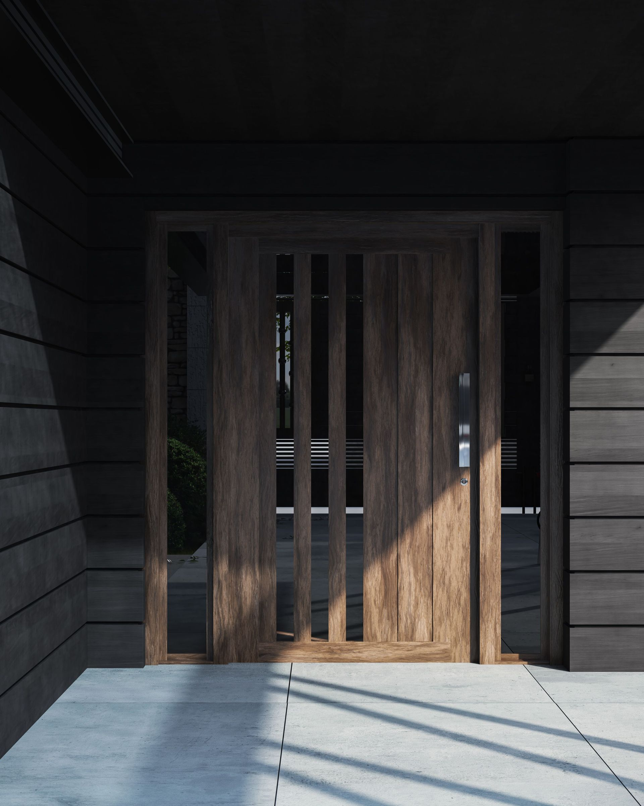
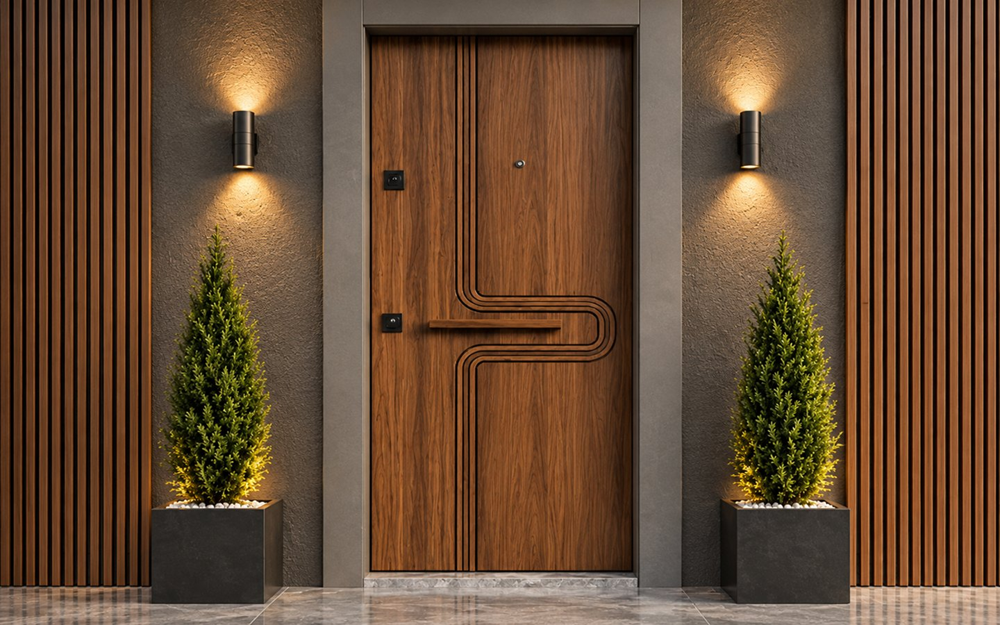

Un marco firme
en todo lo que
hacemos.
Puertas de madera a medida y pre-diseñadas,
para casas, edificios y desarrollos de todo
el país.





Pasá el cursor para girarla
Diseñamos y fabricamos aberturas de madera, y acompañamos cada etapa, desde la planificación hasta la instalación final.
Trabajamos con arquitectos y equipos de obra desde el inicio, con maderas de bosques certificados y reforestados.
Cada obra
tiene su puerta.
Línea a medida
Aberturas únicas
para cada espacio.
Para proyectos que piden una resolución particular.
Relevamos la obra y fabricamos la pieza exacta, en
MDF, enchapada o madera maciza.
Línea pre-diseñada
Una selección de
diseños resueltos.
Modelos y medidas estándar para resolver la obra
con más agilidad: costo previsible, plazos cortos,
planificación simple e instalación sin sorpresas.
Proyectos seleccionados
Casas, edificios y desarrollos,
en Córdoba y en todo el país.
Sobre la empresa
El oficio de la madera
en cada detalle.
- 40
- De fábrica
en Córdoba - 139
- Modelos en
catálogo - +145
- Entregas por mes
- Todo
el país - Envíos e instalación
Madera de bosques reforestados, 80% de
energía solar y una fábrica que no desperdicia.